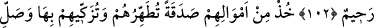

İLK MÜSLÜMANLAR
100. Muhâcirler’den ve Ensâr’dan (İslâm’a girmekte) ilk öne geçenler ile onlara
güzellikle tâbî olanlar var ya... Allah onlardan râzı olmuştur, onlar da Allah’tan râzı
olmuşlardır. (Allah) onlara altlarından ırmaklar akan, içinde ebedî kalacakları
cennetler hazırlamıştır. İşte büyük kurtuluş budur.
101. Çevrenizdeki bedevî Araplardan münâfıklar vardır. Medine halkından bir
kısmı da münâfıklığı huy edinmişlerdir. Sen onları bilmezsin, onları biz biliriz.
Onlara iki kere azâb edeceğiz, sonra da onlar, büyük azaba itileceklerdir.
102. Başka bir kısmı da günahlarını itiraf ettiler, iyi amelle kötü ameli birbirine
karıştırdılar. Allah’ın onların tevbesini kabul etmesi umulur. Çünkü Allah
bağışlayandır, esirgeyendir.
103. Onların mallarından kendilerini temizleyeceğin, yücelteceğin bir sadaka al
ve onlara duâ et; çünkü senin duân, onlara huzur verir. Allah işitendir, bilendir.
104. Bilmediler mi ki, kullarından tevbeyi kabul eden, sadakaları alan Allah’tır.
Ve Allah, tevbeyi çok kabul eden, çok esirgeyendir.
105. De ki: “Yapın (yapacağınızı); yaptığınız işleri Allah da görecek, Rasûlü de,